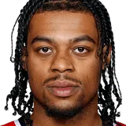

Played 2 seasons for 2 teams; his teams went 9–2 in his games.
Jump to: Record by opponent · Season by season · Teammate help
Compare Trevor Keels with…
Final NBA finish, season by season
Title Finals Other playoffs Missed playoffs. #1 = champion; the dashed line is last place that season. Each point opens that season's final standings.
All 30 teams ranked in 2022-23, his best finish (#6)Teammate help
 Julius Randle3.01 season
Julius Randle3.01 season Norman Powell1.01 season
Norman Powell1.01 season Bam Adebayo0.51 season
Bam Adebayo0.51 season
Career
Career records (W–L, W − L, with and without) include 2026-27 games through Nov. 21, 2026; season counts and finishes are through 2025-26. Each card opens its board in the same scope. How we count.

With and without his teammates
His 12 teammates with the most regular-season games together. "Together" is the team's record in the games both played for it; "Without him" is the team's record in the games Trevor Keels played for that team while the teammate was on it (between the teammate's first and last game for the team, the appearance span) and the teammate did not play. Fewer than 20 games without him: no gap. Games through Nov. 21, 2026. How we count.
- Bam Adebayo
 Miami 2025-26
Miami 2025-26- Together
- 6–2 75.0%
- Without him
- N/A N/A
- Gap
- Too few games without him
 Jaime JaquezMiami 2025-26
Jaime JaquezMiami 2025-26- Together
- 6–2 75.0%
- Without him
- N/A N/A
- Gap
- Too few games without him
 Myron GardnerMiami 2025-26
Myron GardnerMiami 2025-26- Together
- 6–2 75.0%
- Without him
- N/A N/A
- Gap
- Too few games without him
 Kasparas JakučionisMiami 2025-26
Kasparas JakučionisMiami 2025-26- Together
- 6–2 75.0%
- Without him
- N/A N/A
- Gap
- Too few games without him
 Pelle LarssonMiami 2025-26
Pelle LarssonMiami 2025-26- Together
- 5–2 71.4%
- Without him
- N/A N/A
- Gap
- Too few games without him
 Kel'el WareMiami 2025-26
Kel'el WareMiami 2025-26- Together
- 5–2 71.4%
- Without him
- 1–0 100.0%
- Gap
- Too few games without him
 Tyler HerroMiami 2025-26
Tyler HerroMiami 2025-26- Together
- 4–2 66.7%
- Without him
- 2–0 100.0%
- Gap
- Too few games without him
 Davion MitchellMiami 2025-26
Davion MitchellMiami 2025-26- Together
- 4–2 66.7%
- Without him
- 2–0 100.0%
- Gap
- Too few games without him
- Keshad JohnsonMiami 2025-26
- Together
- 4–2 66.7%
- Without him
- 2–0 100.0%
- Gap
- Too few games without him
- Vladislav GoldinMiami 2025-26
- Together
- 4–2 66.7%
- Without him
- 2–0 100.0%
- Gap
- Too few games without him
 Andrew WigginsMiami 2025-26
Andrew WigginsMiami 2025-26- Together
- 4–2 66.7%
- Without him
- 2–0 100.0%
- Gap
- Too few games without him

- Together
- 4–0 100.0%
- Without him
- N/A N/A
- Gap
- Too few games without him
Latest completed seasons
Season by season
Newest first; every header sorts. Final NBA finish is the team's rank among all teams that season (#1 = champion) and opens that season's standings. "Without him" uses the team-season window; the span line counts only the games between his first and last game for the team.
On/off, starts and close games
From the lineup data, 1996-97 on. On/off is net points per 100 possessions with him on the floor minus off, a different unit from the win-rate gaps. Started and off the bench are team records in those games; close games are those within 5 points in the last 5 minutes with him on the floor.
Teammate help by season
Two separate numbers per season, each with every teammate that adds to it. Help this season = Teammates Score points for honors won that season by teammates who shared a game with him. Help coming in = the same teammates' honors from the season before. How help works.
- 2025-26Miami
Norman Powell All-Star14 gBam Adebayo All-Def 2nd0.58 g
Help this season: 1.5 = 1 Norman Powell + 0.5 Bam Adebayo
More: help coming in and other teammates
Help coming in (teammates' honors the season before): 1.125 = 1 Tyler Herro + 0.125 Kel'el Ware
Other teammates (no honors that season): Kasparas Jakučionis 8 g, Myron Gardner 8 g, Jaime Jaquez 8 g, Kel'el Ware 7 g, Pelle Larsson 7 g, Andrew Wiggins 6 g, Vladislav Goldin 6 g, Keshad Johnson 6 g, Davion Mitchell 6 g, Tyler Herro 6 g, Jahmir Young 4 g, Dru Smith 4 g, Simone Fontecchio 3 g
- 2022-23
 New York
Julius Randle All-NBA 3rdAll-Star33 g
New York
Julius Randle All-NBA 3rdAll-Star33 g
Help this season: 3 = 3 Julius Randle
More: help coming in and other teammates
Help coming in (teammates' honors the season before): 0
Other teammates (no honors that season): Jericho Sims 3 g, Miles McBride 3 g, Immanuel Quickley 3 g, Obi Toppin 3 g, RJ Barrett 3 g, Mitchell Robinson 3 g, Isaiah Hartenstein 3 g, Quentin Grimes 2 g, Jalen Brunson 2 g, Josh Hart 2 g, Evan Fournier 1 g, Derrick Rose 1 g, Cam Reddish 1 g, Sviatoslav Mykhailiuk 1 g and 1 more
Record against each opponent
Regular season, through 2025-26 (2026-27 games not included): 11 games, 9–2, against 7 franchises.
Grouped by franchise (named as today); game lists keep each team's name that season. Filters and the tab are kept in the URL, so a filtered view can be shared.
| Games list | |||||||
|---|---|---|---|---|---|---|---|
| 2 | 2–0 | 100.0% | +2 | N/A | 2022-23 to 2025-26 | ||
| 2 | 2–0 | 100.0% | +2 | N/A | 2022-23 to 2025-26 | ||
| 2 | 0–2 | 0.0% | −2 | N/A | 2025-26 | ||
| 2 | 2–0 | 100.0% | +2 | N/A | 2025-26 | ||
| 1 | 1–0 | 100.0% | +1 | N/A | 2025-26 | ||
| 1 | 1–0 | 100.0% | +1 | N/A | 2022-23 | ||
| 1 | 1–0 | 100.0% | +1 | N/A | 2025-26 |
Rows add up to his career record in his games. A playoff series counts when he played in it; early round-robin games show as games only. How we count.
Arrival and departure
Team wins per 82 games the season before he arrived vs his first season there, and his last season vs the season after he left. He leaves a team only when his next season with games is for another team (or he never plays again); whole seasons he missed and came back from are one "Missed" row with the team's record without him. Per 82 so short seasons compare fairly. These are team records, not a measure of what he did.